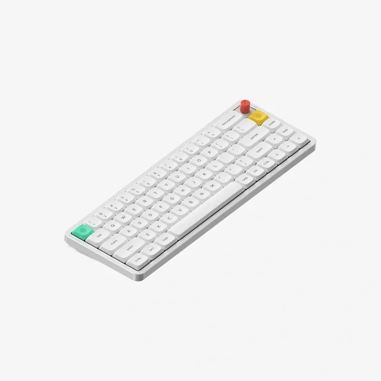
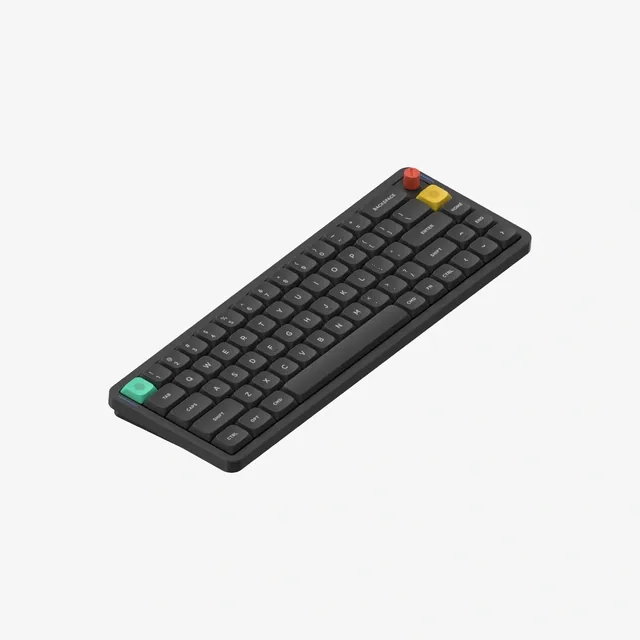

NuPhy Air65 V3
Pairing, shortcuts & RGB controls.
Pair your dongle.
- Unplug the USB dongle.
- Set the switches to Win + Wireless.
- Hold Fn + R for 3 seconds.
- When the left light flashes fast, plug the dongle in.
Left light steady green = connected.
Green light still flashing?
A slow green pulse means reconnecting; fast flashes mean pairing. Hold Fn + R for 3 seconds, then reinsert the dongle nearby. Try a direct USB 2.0 port or an extension cable. For wired use, select Wired and connect a USB-C data cable. Use the left light for pairing. The right light shows battery and settings.
Use Bluetooth
Select Wireless. Hold Fn + Q, W or E for 3 seconds, then add the NuPhy keyboard in Windows Bluetooth settings. Tap the same combination to switch back. If needed, remove the old Bluetooth entry and pair again.
Keyboard shortcuts
Hold Fn, then press the other keys. US / UK layout.
Connection
| Action | Shortcut |
|---|---|
| Bluetooth 1 | Fn+Q |
| Bluetooth 2 | Fn+W |
| Bluetooth 3 | Fn+E |
| 2.4 GHz dongle | Fn+R |
Tap to switch. Hold 3 seconds to pair. Wireless mode required.
System
| Action | Shortcut |
|---|---|
| Auto sleep on / off | Fn+] |
| Battery display on / off | Fn+\ |
| Factory reset | Fn+[3 sec |
Auto sleep starts after 6 minutes. Reset restores factory settings.
RGB backlight
| Action | Shortcut |
|---|---|
| All lights on / off | Fn+Tab |
| Brightness up | Fn+↑ |
| Brightness down | Fn+↓ |
| Next effect | Fn+← |
| Next color | Fn+→ |
| Animation slower | Fn+, |
| Animation faster | Fn+. |
Side lights
| Action | Shortcut |
|---|---|
| Side lights on / off | Fn+M+/ |
| Brightness up | Fn+M+↑ |
| Brightness down | Fn+M+↓ |
| Next effect | Fn+M+← |
| Next color | Fn+M+→ |
| Animation slower | Fn+M+, |
| Animation faster | Fn+M+. |
Use the physical comma, period and slash keys. No extra Shift needed.
Light indicators
Left · Connection
Right · Battery
Three-flash feedback
Keyboard photos & controls


Use the physical Win/Mac switch for your computer. The connection switch selects Off, Wired or Wireless. NuPhy IO shows the current key and knob assignments.
Customize keys & knob
Connect by USB, select Wired, and open NuPhy IO in Edge or Chrome. Authorize Air65 V3 to view or change keys, lighting, macros and knob actions.
Windows layers: 4–7. The quick guide omits F-key, media and knob mappings; check IO for your current assignments.